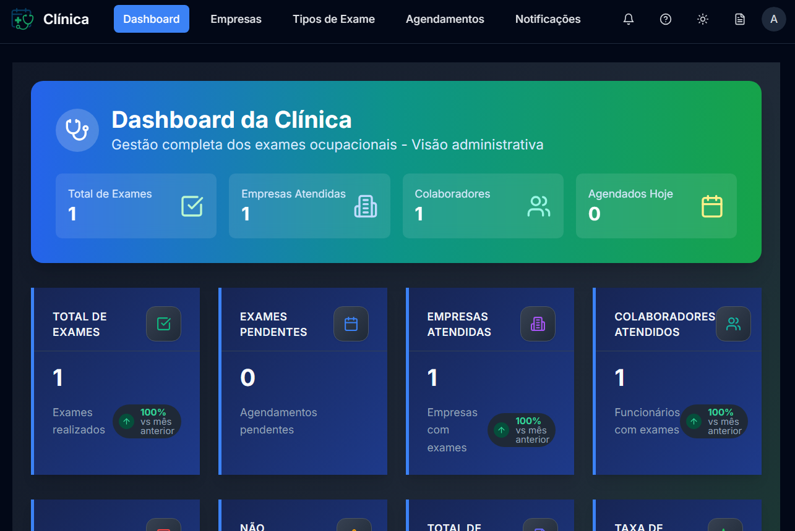

Meus Projetos


Sistema de Agendamento Ocupacional
Sistema de gestão de agendamentos de exames médicos ocupacionais, desenvolvido para clínicas de medicina do trabalho. A aplicação oferece uma solução robusta para o gerenciamento de empresas, funcionários, tipos de exames e agendamentos, com foco em segurança, performance e experiência do usuário.